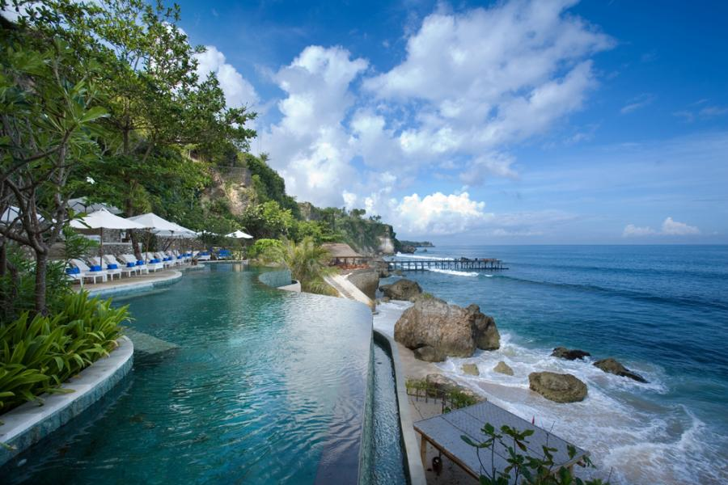
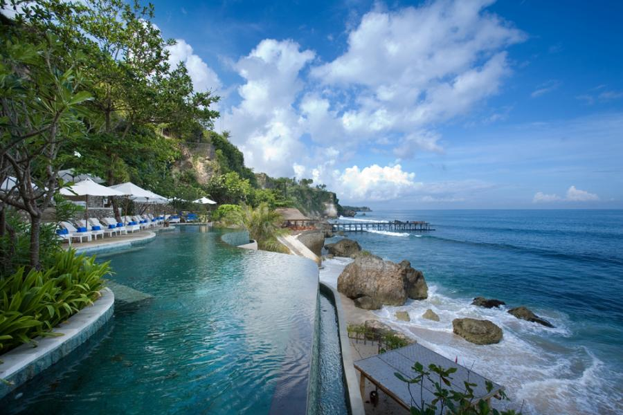

Bali adalah pulau tropis yang menjadi ikon pariwisata Indonesia di mata dunia. Dikenal sebagai Pulau Dewata, Bali menawarkan perpaduan sempurna antara keindahan alam, kekayaan budaya, dan kehidupan modern. Hamparan pantai berpasir putih, sawah berundak yang menenangkan, serta panorama pegunungan yang menakjubkan menjadikan Bali destinasi yang cocok untuk semua jenis wisatawan — dari petualang hingga pencari ketenangan.
Selain pesonanya yang alami, Bali juga terkenal dengan keramahan penduduknya dan kuliner khas yang menggugah selera. Wisatawan dapat menikmati hidangan tradisional seperti Ayam Betutu, Sate Lilit, dan Nasi Campur Bali di berbagai tempat, mulai dari warung sederhana hingga restoran mewah di tepi pantai. Keindahan budaya Bali pun terpancar dari tarian tradisional, upacara adat, dan karya seninya yang sarat makna spiritual.
Tak hanya itu, Bali juga memiliki beragam destinasi wisata populer seperti Ubud yang penuh seni dan ketenangan, Tanah Lot yang megah di tepi laut, hingga kawasan Kuta dan Seminyak yang menawarkan kehidupan malam dan hiburan modern. Dengan kombinasi alam yang menawan, budaya yang mendalam, serta keramahan masyarakatnya, Bali menjadi destinasi yang tak pernah kehilangan pesonanya di hati para wisatawan dari seluruh dunia.